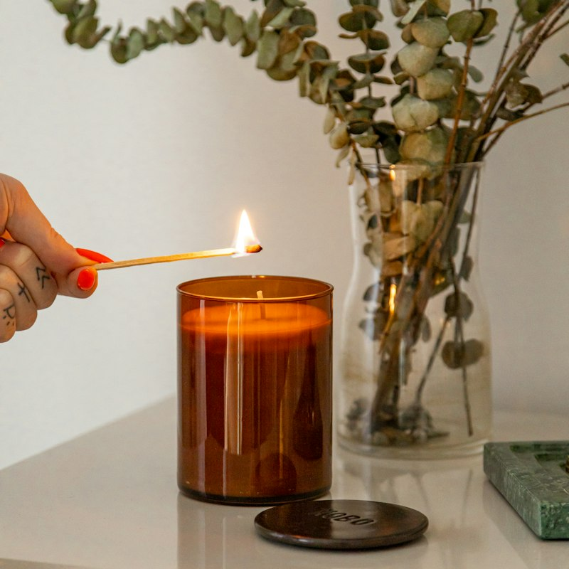
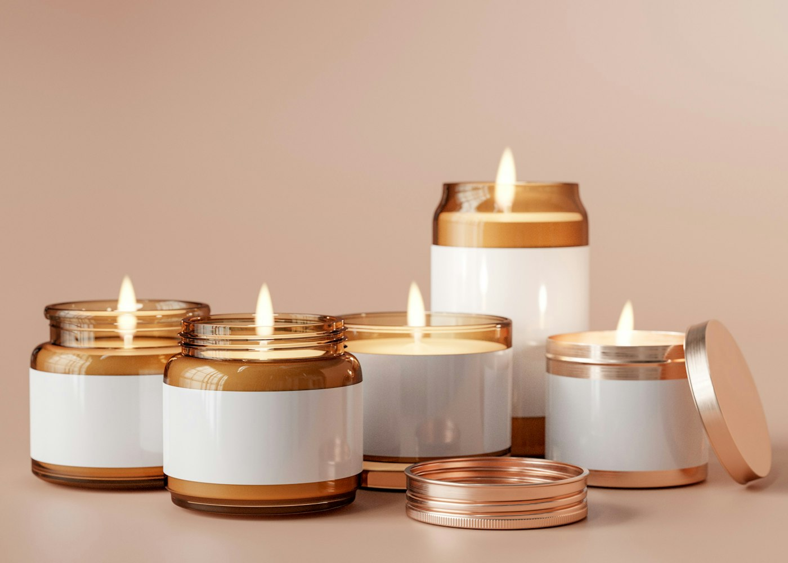
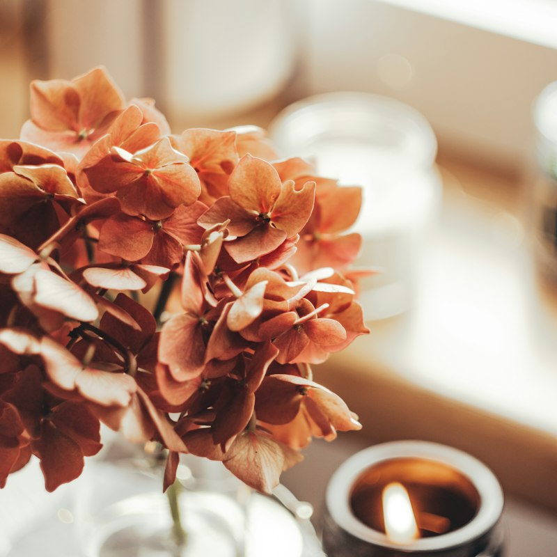
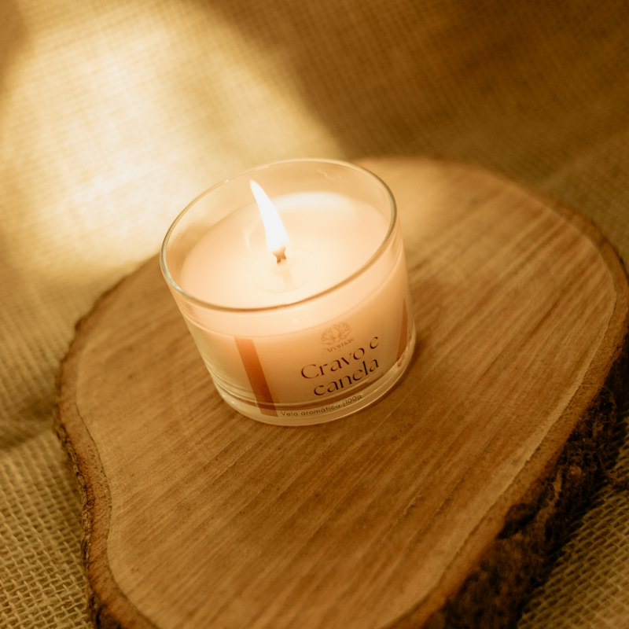
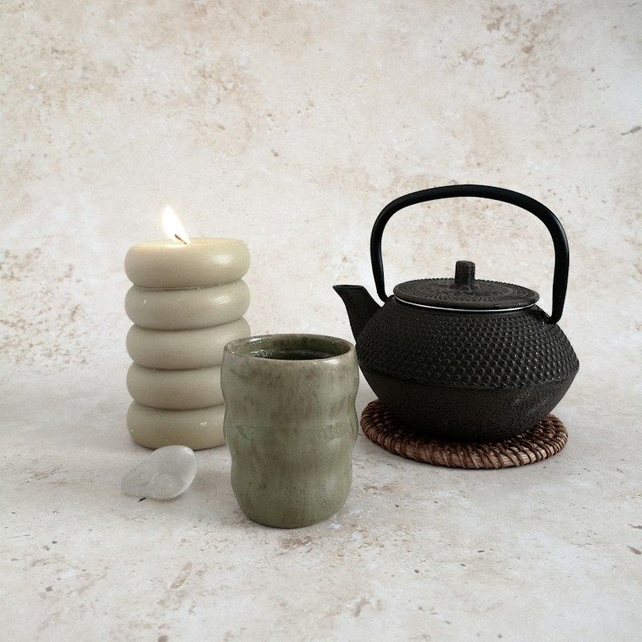
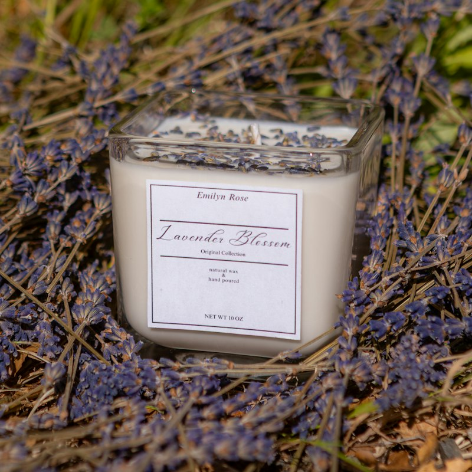
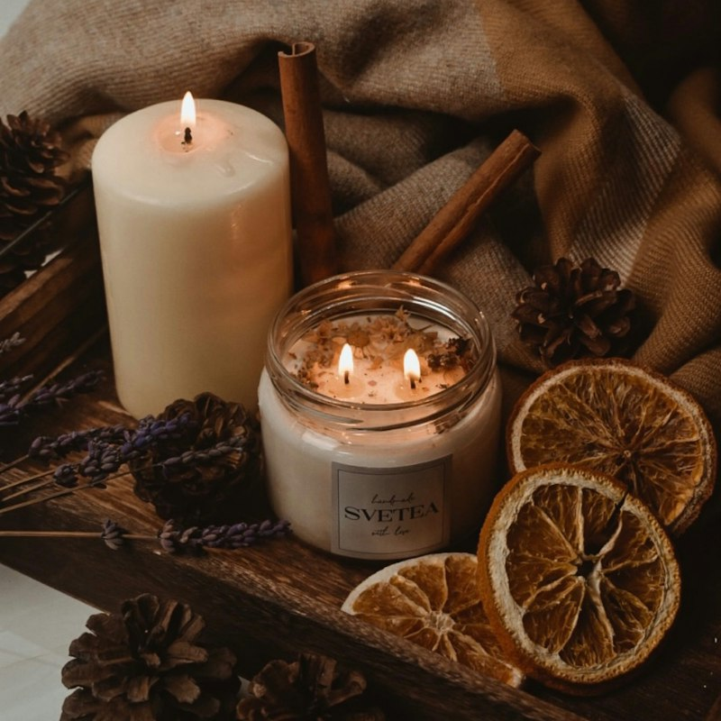
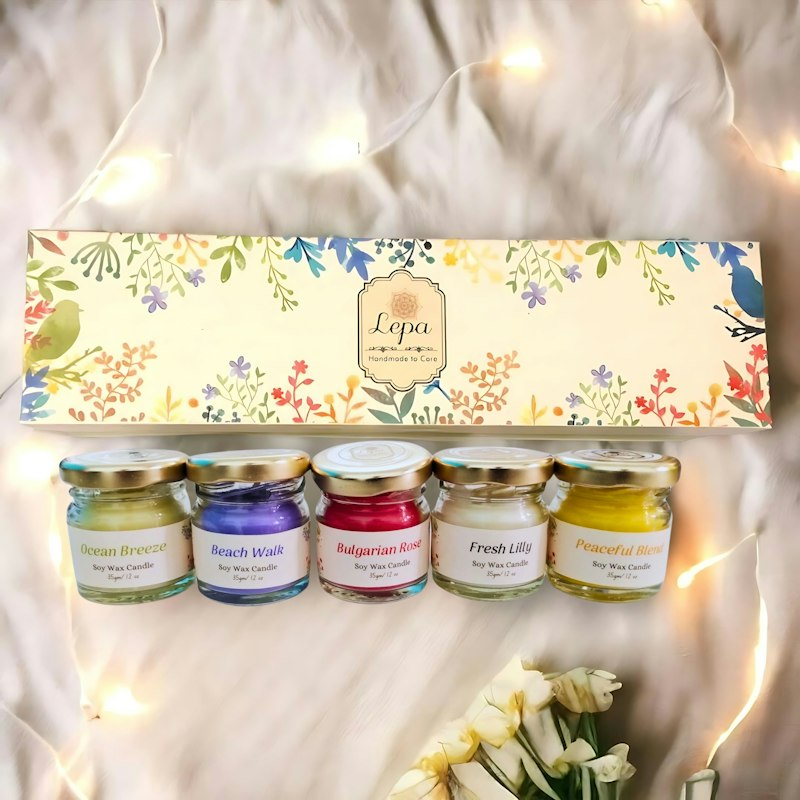
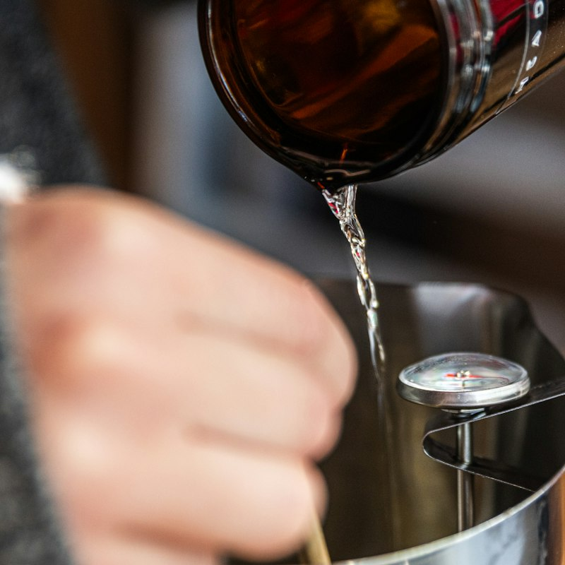

Meilleure vente
Figue & Cèdre
Figue mûre, feuille de figuier, bois de cèdre. Boisé et gourmand.
180 g · environ 45 h de combustion · pot en verre ambré
32 €
Atelier Lumen fabrique des bougies parfumées en cire de colza française, avec des mèches en coton et des parfums de Grasse. Chaque bougie est coulée, étiquetée et emballée à la main dans notre atelier des pentes de la Croix-Rousse.
Découvrir la collection
Une cire végétale cultivée en France, sans paraffine ni huile de palme. Elle brûle lentement et proprement.
Nos parfums sont composés à Grasse, sans phtalates, et conformes aux normes IFRA.
Rapportez votre pot vide à l'atelier : nous le remplissons avec 15 % de réduction sur la recharge.
Toutes nos bougies sont 100 % végétales et vegan. Bougies de 180 g : environ 45 heures de combustion.

Figue mûre, feuille de figuier, bois de cèdre. Boisé et gourmand.
180 g · environ 45 h de combustion · pot en verre ambré
32 €

Néroli, fleur d'oranger, musc blanc. Lumineux et floral.
180 g · environ 45 h de combustion · pot en verre blanc
28 €

Santal, vanille de Madagascar, ambre. Chaud et enveloppant.
180 g · environ 45 h de combustion · pot en verre ambré
34 €

Thé noir fumé, bergamote, cardamome. Frais et élégant.
180 g · environ 45 h de combustion · pot en verre ambré
30 €

Lavande fine, romarin, bois flotté. Apaisant, idéal pour la chambre.
180 g · environ 45 h de combustion · pot en verre blanc
28 €

Bois brûlé, clou de girofle, orange sanguine. Disponible de novembre à février, dans la limite des stocks.
180 g · environ 45 h de combustion · mèche en bois qui crépite
36 €

Trois mini bougies de 70 g au choix parmi la collection permanente, dans un coffret cadeau en carton recyclé.
3 × 70 g · environ 18 h de combustion chacune
39 €

Rapportez un pot Atelier Lumen vide et propre : nous le remplissons avec le parfum de votre choix.
Uniquement à l'atelier · délai 48 h
15 % de réduction sur le prix de la bougie
Nous acceptons la carte bancaire (Visa, Mastercard, CB), PayPal et Apple Pay. Les cartes cadeaux sont disponibles de 25 € à 150 €, valables un an, utilisables en ligne et à l'atelier.